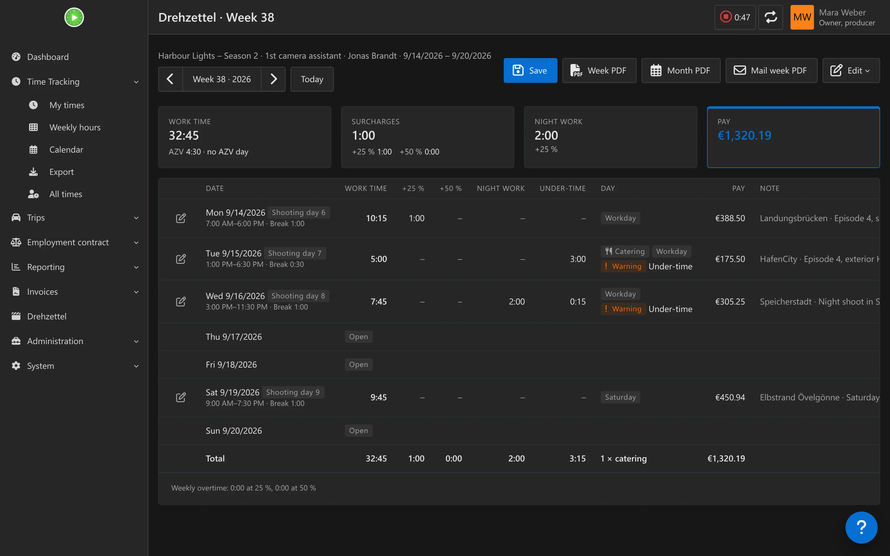
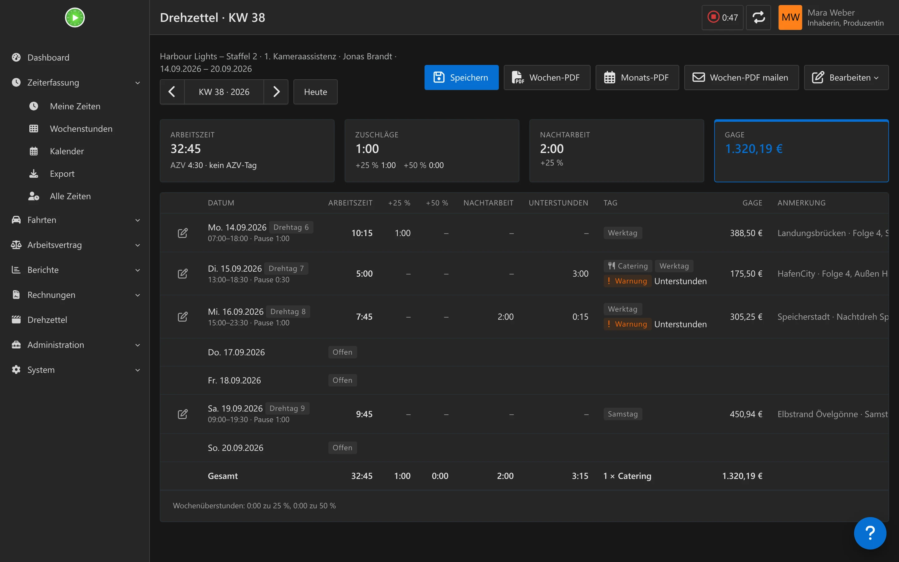
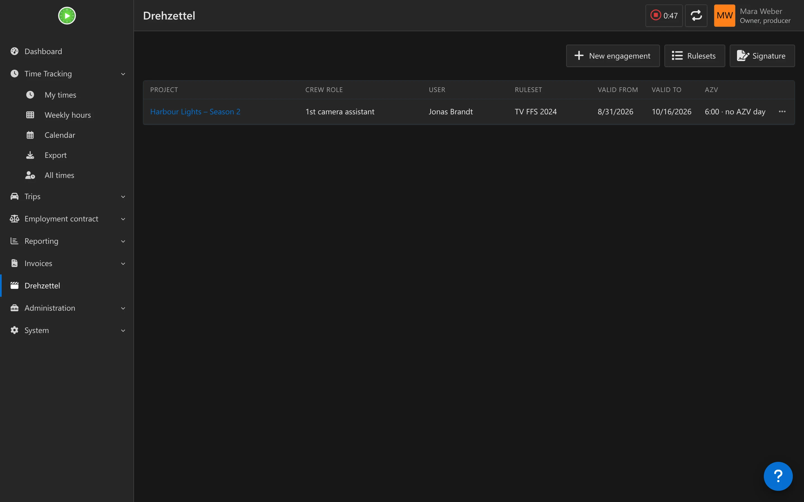
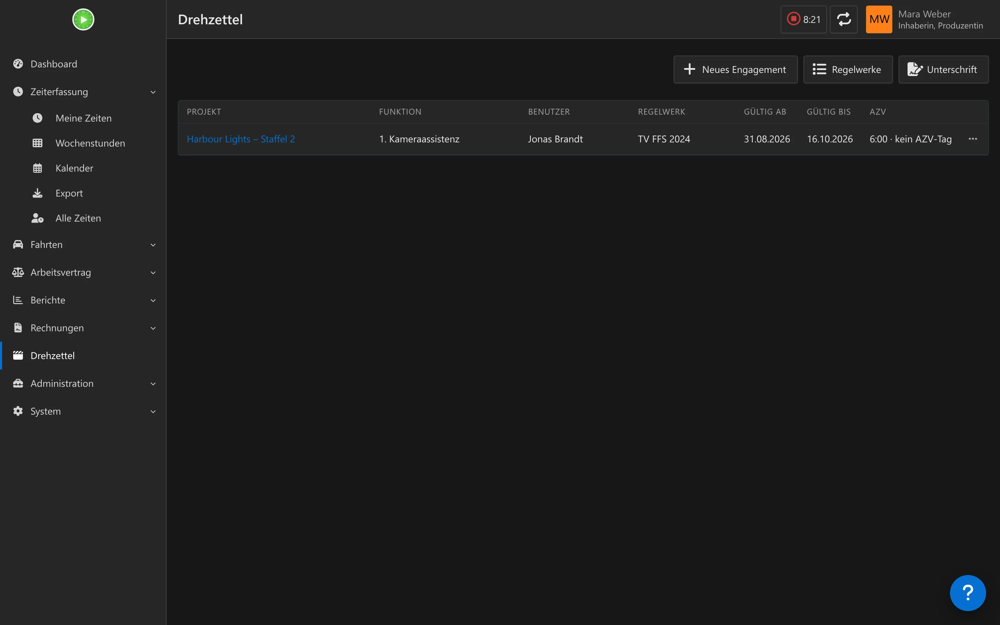
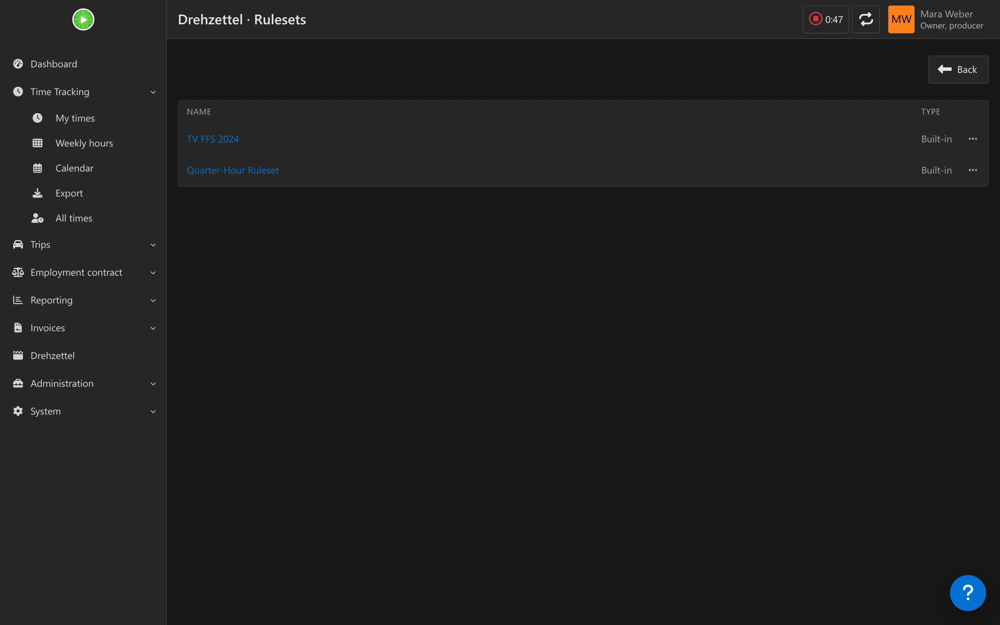
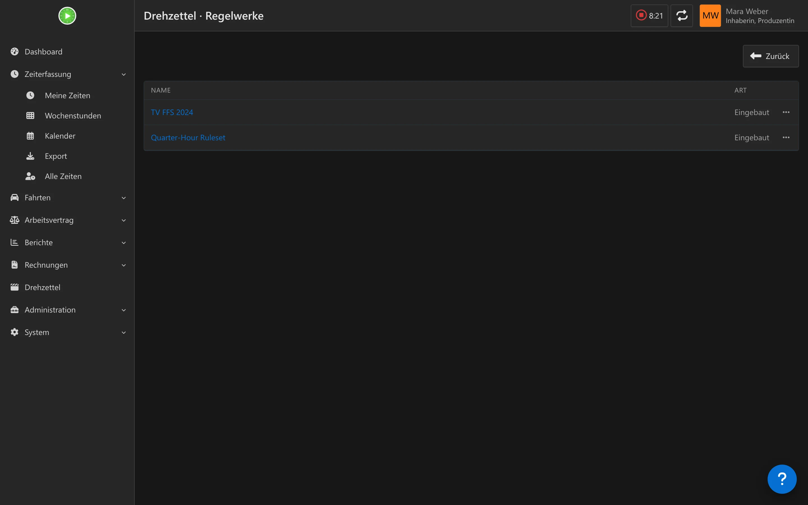

TV FFS rules built in
TV-FFS-Regeln eingebaut
Daily and weekly overtime, the 6th and 7th day, night work from 22:00 to 06:00, Saturday, Sunday and holiday surcharges, and the 45 minute break rule. Every value can be changed.
Tages- und Wochenmehrarbeit, 6. und 7. Tag, Nachtarbeit von 22 bis 6 Uhr, Zuschläge für Samstag, Sonntag und Feiertag sowie die 45-Minuten-Pausenregel. Jeder Wert lässt sich ändern.
Own terms per person
Eigene Bedingungen pro Person
An engagement ties one user to one project, with pay, dates and a snapshot of the ruleset. Two people on the same film can have different rules, and later edits never change past results.
Ein Engagement verbindet eine Person mit einem Projekt, mit Gage, Zeitraum und einer Kopie des Regelwerks. Zwei Personen im selben Film können unterschiedliche Regeln haben, und spätere Änderungen verändern keine alten Ergebnisse.
Your rounding
Deine Rundung
Begin and end are rounded on the clock first, so every row adds up. Work time and surcharges are rounded separately: to the minute, quarter hour, half hour or hour, up, down or to the nearest. TV FFS counts begun hours, your old app may not.
Beginn und Ende werden zuerst auf der Uhr gerundet, damit jede Zeile aufgeht. Arbeitszeit und Zuschläge werden getrennt gerundet: auf Minute, Viertelstunde, halbe Stunde oder Stunde, auf-, ab- oder kaufmännisch. Der TV FFS zählt begonnene Stunden, deine alte App vielleicht nicht.
Right in the Kimai form
Direkt im Kimai-Formular
Begin and end come from your normal Kimai entries. When a project has an engagement, the entry form gets a film day switch with break, catering, day type and note.
Beginn und Ende kommen aus deinen normalen Kimai-Einträgen. Hat ein Projekt ein Engagement, bekommt das Eintragsformular einen Drehtag-Schalter mit Pause, Catering, Tagestyp und Anmerkung.
Week view
Wochenansicht
One page per week: edit break, catering, day type, category, extra pay and note per day, and see work time, surcharges and pay update as you type.
Eine Seite pro Woche: Pause, Catering, Tagestyp, Kategorie, Zusatzgage und Anmerkung pro Tag bearbeiten und sehen, wie sich Arbeitszeit, Zuschläge und Gage beim Tippen ändern.
PDF and mail
PDF und Mail
Weekly, monthly or any range, with the columns you choose and your signature on the sheet. Send the week straight to the production office; the last address is remembered.
Woche, Monat oder freier Zeitraum, mit den Spalten, die du wählst, und deiner Unterschrift auf dem Zettel. Die Woche direkt an die Produktion schicken; die letzte Adresse bleibt gespeichert.
Night shoots and Sundays
Nachtdreh und Sonntage
A night shoot that ends by 04:00 stays one working day. Sunday and holiday work across midnight is split by calendar day, and a staggered shoot waives the surcharge where the tariff says so.
Ein Nachtdreh, der bis 4 Uhr endet, bleibt ein Arbeitstag. Sonntags- und Feiertagsarbeit über Mitternacht wird nach Kalendertag geteilt, und beim versetzten Dreh entfällt der Zuschlag, wo der Tarif es vorsieht.
AZV credit
AZV-Gutschrift
From five shooting days in a row, the working time reduction of TV FFS TZ 6 is credited: shown on the week page, in the PDF and on the overview.
Ab fünf Drehtagen in Folge wird die Arbeitszeitverkürzung nach TV FFS TZ 6 gutgeschrieben: auf der Wochenseite, im PDF und in der Übersicht.
Warnings
Warnungen
A heads-up for more than 12 hours a day, more than 60 hours a week, too little rest between two days, a waived surcharge or a night shoot past 04:00. Warnings never change a figure.
Ein Hinweis bei mehr als 12 Stunden am Tag, mehr als 60 Stunden in der Woche, zu wenig Ruhezeit zwischen zwei Tagen, einem entfallenen Zuschlag oder einem Nachtdreh über 4 Uhr hinaus. Warnungen ändern keine Zahl.
What the production office gets
Was die Produktion bekommt
One row per shooting day: begin, end, break and work time, then the surcharge time per tier, night work, catering and day type. Below the table are a field for remarks and two signature lines, one for the production management and one for you.
Eine Zeile pro Drehtag: Beginn, Ende, Pause und Arbeitszeit, dann die Zuschlagszeit je Stufe, Nachtarbeit, Catering und Tagestyp. Unter der Tabelle stehen ein Feld für Anmerkungen und zwei Unterschriftsfelder, eines für die Produktionsleitung und eines für dich.
- A4 landscape, black on white, prints cleanly
- Columns are optional, pay can be hidden
- Week, month or any range, split by calendar week so weekly overtime stays correct
- The rounding rules are printed on the sheet, so the production can check the numbers
- A4 quer, schwarz auf weiß, druckt sauber
- Spalten sind optional, die Gage lässt sich ausblenden
- Woche, Monat oder freier Zeitraum, nach Kalenderwochen geteilt, damit die Wochenmehrarbeit stimmt
- Die Rundungsregeln stehen auf dem Zettel, die Produktion kann die Zahlen also nachprüfen
One page per week
Eine Seite pro Woche
Every shooting day of the week in one table: begin and end from Kimai, then break, catering, day type and extra pay to fill in. Work time, surcharge tiers, night work and pay update as you type, and warnings show next to the day they concern.
Alle Drehtage der Woche in einer Tabelle: Beginn und Ende aus Kimai, dazu Pause, Catering, Tagestyp und Zusatzgage zum Ausfüllen. Arbeitszeit, Zuschlagsstufen, Nachtarbeit und Gage rechnen beim Tippen mit, Warnungen stehen neben dem Tag, den sie betreffen.






How it works
So funktioniert es
You keep tracking in Kimai as you always do, one entry per shooting day. Drehzettel reads those entries, adds what Kimai does not know, and applies the terms of your engagement.
Du erfasst weiter wie gewohnt in Kimai, einen Eintrag pro Drehtag. Drehzettel liest diese Einträge, ergänzt, was Kimai nicht kennt, und wendet die Bedingungen deines Engagements an.
- A project without an engagement behaves like plain Kimai, so your freelance work is untouched
- Mark film projects as not billable to keep them out of your invoices
- Several entries on one date are merged into one span, from the earliest begin to the latest end
- Public holidays come from the Working Hours & Holidays plugin when it is installed
- A REST API under Kimai's own
/apilets other clients read and write film days; Plasmai uses it for the film day fields in the panel
- Ein Projekt ohne Engagement verhält sich wie normales Kimai, deine freiberufliche Arbeit bleibt unberührt
- Markiere Filmprojekte als nicht abrechenbar, damit sie nicht in deinen Rechnungen landen
- Mehrere Einträge an einem Datum werden zu einer Spanne verschmolzen, vom frühesten Beginn bis zum spätesten Ende
- Feiertage kommen aus dem Plugin Arbeitszeiten & Feiertage, wenn es installiert ist
- Eine REST-API unter Kimais eigenem
/apilässt andere Programme Drehtage lesen und schreiben; Plasmai nutzt sie für die Drehtag-Felder im Panel
Default rules
Standardregeln
The built-in ruleset follows the TV FFS of 12 October 2024. It is a starting point: copy it and change any value for your contract. A second preset reproduces the settings of a popular timesheet app.
Das eingebaute Regelwerk folgt dem TV FFS vom 12. Oktober 2024. Es ist ein Ausgangspunkt: Kopiere es und ändere jeden Wert für deinen Vertrag. Ein zweites Preset bildet die Einstellungen einer verbreiteten Stundenzettel-App nach.
| RuleRegel | TV FFS 2024 defaultStandard nach TV FFS 2024 |
|---|---|
| Daily overtimeTägliche Mehrarbeit | 11th hour +25 %, from the 11th full hour +50 %11. Stunde +25 %, ab der vollendeten 11. Stunde +50 % |
| Weekly overtimeWöchentliche Mehrarbeit | Hours 51 to 55 +25 %, then +50 %; daily overtime is not counted twiceStunden 51 bis 55 +25 %, danach +50 %; tägliche Mehrarbeit zählt nicht doppelt |
| 6th and 7th day6. und 7. Tag | The n-th working day of the calendar week, counted as weekly overtime; a day off does not reset the count, travel days do not count (option)Der n-te Arbeitstag der Kalenderwoche, zählt als Wochenmehrarbeit; ein freier Tag setzt die Zählung nicht zurück, Reisetage zählen nicht (Option) |
| Night workNachtarbeit | 22:00 to 06:00 +25 %, on top of overtime22:00 bis 06:00 +25 %, zusätzlich zur Mehrarbeit |
| Saturday, Sunday, holidaySamstag, Sonntag, Feiertag | +25 % per hour, +75 % and +100 % on the day rate+25 % je Stunde, +75 % und +100 % auf die Tagesgage |
| Night shootNachtdreh | Work after midnight that ends by 04:00 belongs to the previous working day (TZ 5.2.4)Arbeit nach Mitternacht, die bis 4 Uhr endet, gehört zum vorigen Arbeitstag (TZ 5.2.4) |
| Sunday or holiday across midnightSonntag oder Feiertag über Mitternacht | Surcharge pro rata for the hours on that day, for the whole day only with more than four hours on it (TZ 5.6.1, 5.6.3)Zuschlag anteilig für die Stunden an diesem Tag, für den ganzen Tag nur bei mehr als vier Stunden daran (TZ 5.6.1, 5.6.3) |
| Staggered shootVersetzter Dreh | No Sunday surcharge (and none for four listed holidays) on the 1st to 5th production day of the week (TZ 5.6.3)Kein Sonntagszuschlag (und keiner für vier genannte Feiertage) am 1. bis 5. Produktionstag der Woche (TZ 5.6.3) |
| BreakPause | 45 minutes are unpaid, a longer break counts as work time beyond that45 Minuten sind unbezahlt, eine längere Pause zählt darüber hinaus als Arbeitszeit |
| Hourly rateStundensatz | Weekly gage / 50, or daily gage / 10Wochengage / 50 oder Tagesgage / 10 |
| RoundingRundung | Work time to the minute, surcharges up to the begun hourArbeitszeit auf die Minute, Zuschläge auf die begonnene Stunde |
| AZVAZV | 2.5 h after 5 shooting days in a row, 0.5 h for each further one; 10 h make one AZV day (TZ 6, for shoots from 1 May 2025). Taking AZV days is not modelled yet2,5 h nach 5 Drehtagen in Folge, 0,5 h für jeden weiteren; 10 h ergeben einen AZV-Tag (TZ 6, für Drehs ab 1. Mai 2025). Das Nehmen von AZV-Tagen ist noch nicht abgebildet |
Install
Installation
- Clone the plugin into
var/plugins/DrehzettelBundle; the folder name must stayDrehzettelBundleand containDrehzettelBundle.php. - Run
bin/console kimai:reload -nandbin/console kimai:bundle:drehzettel:install. In the official Docker image use the full path/opt/kimai/bin/consolewithdocker exec. - Check that Kimai lists the plugin:
bin/console kimai:plugins. - Give your role the
drehzettelpermission (anddrehzettel_manageto set up rulesets and engagements), then create an engagement for your film project under Drehzettel.
- Klone das Plugin nach
var/plugins/DrehzettelBundle; der Ordnername mussDrehzettelBundlebleiben undDrehzettelBundle.phpenthalten. - Führe
bin/console kimai:reload -nundbin/console kimai:bundle:drehzettel:installaus. Im offiziellen Docker-Image nutzt du mitdocker execden vollen Pfad/opt/kimai/bin/console. - Prüfe, ob Kimai das Plugin auflistet:
bin/console kimai:plugins. - Gib deiner Rolle die Berechtigung
drehzettel(unddrehzettel_manage, um Regelwerke und Engagements anzulegen) und lege dann unter Drehzettel ein Engagement für dein Filmprojekt an.
Compatibility
Kompatibilität
- Requires Kimai ≥ 2.67 (PHP ≥ 8.1)
- Runs next to other plugins; it only reads timesheets and adds its own tables, prefixed
kimai2_ext_drehzettel_ - Rules are the German TV FFS by default, but every value is editable, so other schemes can be modelled
- Benötigt Kimai ≥ 2.67 (PHP ≥ 8.1)
- Läuft neben anderen Plugins; es liest nur Zeiteinträge und legt eigene Tabellen mit dem Präfix
kimai2_ext_drehzettel_an - Die Regeln sind standardmäßig der deutsche TV FFS, aber jeder Wert ist änderbar, andere Modelle lassen sich also abbilden
Questions
Fragen
Is the result binding for my pay?Ist das Ergebnis für meine Gage verbindlich?
No. Drehzettel is a calculator and a timesheet generator, not payroll or legal advice. The defaults follow the TV FFS text, but your contract decides. Check the numbers before you hand the sheet in.
Nein. Drehzettel ist ein Rechner und Zettelgenerator, keine Lohnabrechnung und keine Rechtsberatung. Die Standardwerte folgen dem TV-FFS-Text, aber dein Vertrag entscheidet. Prüfe die Zahlen, bevor du den Zettel abgibst.
Why not keep using the timesheet app?Warum nicht bei der Stundenzettel-App bleiben?
Then you track twice: once in Kimai for your freelance work and once in the app for the production. With Drehzettel the shooting day is tracked once, in Kimai, and the sheet comes from the same data.
Dann erfasst du doppelt: einmal in Kimai für die freiberufliche Arbeit und einmal in der App für die Produktion. Mit Drehzettel wird der Drehtag einmal in Kimai erfasst, und der Zettel kommt aus denselben Daten.
Can two people on one film have different terms?Können zwei Personen im selben Film unterschiedliche Bedingungen haben?
Yes. Rules and pay belong to the engagement, which ties one user to one project. Each person gets a copy of a ruleset and can change it without affecting anyone else.
Ja. Regeln und Gage gehören zum Engagement, das eine Person mit einem Projekt verbindet. Jede Person bekommt eine Kopie eines Regelwerks und kann sie ändern, ohne andere zu beeinflussen.
Does it touch my freelance billing?Berührt es meine freiberufliche Abrechnung?
No. Projects without an engagement are ignored. Mark film projects as not billable so they stay out of your invoices and billing overviews.
Nein. Projekte ohne Engagement werden ignoriert. Markiere Filmprojekte als nicht abrechenbar, damit sie nicht in deinen Rechnungen und Abrechnungsübersichten landen.
Changes
Änderungen
What each release brought, newest first. Every release adds an entry here and the same notes on the release page.
Was jede Version gebracht hat, die neueste zuerst. Jede Version bekommt hier einen Eintrag und dieselben Notizen auf der Release-Seite.
-
0.3.0
A log of the mails per engagement, shooting days marked on Kimai's working times page, and the plugin runs on PHP 8.1 again.Ein Protokoll der Mails je Engagement, Drehtage auf Kimais Arbeitszeiten-Seite markiert, und das Plugin läuft wieder unter PHP 8.1.
NewNeu
- Mail log: the dialog "Mail template and automatic sending" lists the last 10 mails of the engagement, automatic and manual, with time, period, recipient and result (sent, failed, skipped). A retry after a failure counts on the same row; only administrators see the reason of a failure.Mail-Protokoll: der Dialog „Mail-Vorlage und automatischer Versand“ zeigt die letzten 10 Mails des Engagements, automatische und manuelle, mit Zeit, Zeitraum, Empfänger und Ergebnis (gesendet, fehlgeschlagen, übersprungen). Ein neuer Versuch nach einem Fehler zählt in derselben Zeile; den Grund eines Fehlers sehen nur Administratoren.
- Kimai's working times page (
/contract) marks every shooting day the Drehzettel counts, also days whose entries came from the stopwatch or quick entry; travel days are not marked.Kimais Arbeitszeiten-Seite (/contract) markiert jeden Drehtag, den der Drehzettel zählt, auch Tage, deren Einträge aus der Stoppuhr oder der Schnellerfassung kommen; Reisetage werden nicht markiert.
ImprovedVerbessert
- Automatic mails that were sent or skipped are written to the Kimai log.Automatische Mails, die gesendet oder übersprungen wurden, stehen im Kimai-Log.
FixedBehoben
- On PHP 8.1 the plugin failed to load ("Constant expression contains invalid operations").Unter PHP 8.1 ließ sich das Plugin nicht laden („Constant expression contains invalid operations“).
All changes since 0.2.0 →Alle Änderungen seit 0.2.0 →NoteHinweis
- New table for the mail log: after updating, run
bin/console kimai:reload -nandbin/console kimai:bundle:drehzettel:install.Neue Tabelle für das Mail-Protokoll: nach dem Updatebin/console kimai:reload -nundbin/console kimai:bundle:drehzettel:installausführen. - The release zip is now attached to the release on GitHub.Das Release-Zip hängt jetzt am Release auf GitHub.
-
0.2.0
The rules cover more of the TV FFS (AZV, travel days, staggered shoots, night shoots past midnight), the week mail can be edited and sent on a schedule, the pages are rebuilt on Kimai's own components, and the API gives clients like Plasmai what they need.Die Regeln decken mehr vom TV FFS ab (AZV, Reisetage, versetzter Dreh, Nachtdrehs über Mitternacht), die Wochen-Mail lässt sich bearbeiten und nach Plan versenden, die Seiten sind auf Kimais eigenen Bausteinen neu gebaut, und die API gibt Clients wie Plasmai, was sie brauchen.
NewNeu
- AZV credit per TV FFS TZ 6: 2.5 h after 5 shooting days and 0.5 h for each further one, per block of 20 shooting days, counted per engagement from 1 May 2025; on the week page, the month PDF and the overview, switchable per engagement.AZV-Gutschrift nach TV FFS TZ 6: 2,5 h nach 5 Drehtagen und 0,5 h für jeden weiteren, je Block von 20 Drehtagen, gezählt je Engagement ab 1. Mai 2025; auf der Wochenseite, im Monats-PDF und in der Übersicht, je Engagement abschaltbar.
- Staggered shoot (TZ 5.6.3): a Sunday or one of four named holidays that is the 1st to 5th production day of the week gets no surcharge, with a warning on that day. A night shoot that ends by 04:00 belongs to the previous working day (TZ 5.2.4).Versetzter Dreh (TZ 5.6.3): ein Sonntag oder einer von vier genannten Feiertagen, der 1. bis 5. Produktionstag der Woche ist, bekommt keinen Zuschlag, mit Warnung an dem Tag. Ein Nachtdreh, der bis 04:00 endet, gehört zum vorigen Arbeitstag (TZ 5.2.4).
- Ruleset option: count travel days for the 6th/7th day and the weekly overtime (default: the tariff, they do not count).Regelwerk-Option: Reisetage für den 6./7. Tag und die Wochenmehrarbeit mitzählen (Standard: der Tarif, sie zählen nicht).
- Per film day: extra pay (Zusatzgage/Spesen), the production's running shooting day number ("Drehtag 37") and the day of the shooting week (1 to 7) to override the 6th/7th-day count; shown as badges in the week view and in the PDF.Je Drehtag: Zusatzgage/Spesen, die laufende Drehtag-Nummer der Produktion („Drehtag 37“) und der Tag der Drehwoche (1 bis 7), um die Zählung für den 6./7. Tag zu überschreiben; als Badge in der Wochenansicht und im PDF.
- Week mail: subject and text editable before sending, from a template per engagement with placeholders; automatic sending weekly or monthly at a set hour, by cron (
drehzettel:mail:due) or, without cron, after a page load, never twice.Wochen-Mail: Betreff und Text vor dem Senden bearbeitbar, aus einer Vorlage je Engagement mit Platzhaltern; automatischer Versand wöchentlich oder monatlich zu einer festen Stunde, per Cron (drehzettel:mail:due) oder ohne Cron nach einem Seitenaufruf, nie doppelt. - Catering default per engagement.Catering-Standard je Engagement.
- An engagement can be limited to activities, so a private commute on the same project is not counted as a film day.Ein Engagement lässt sich auf Tätigkeiten beschränken, damit ein privater Arbeitsweg im selben Projekt nicht als Drehtag zählt.
- Built-in rulesets open read-only, to copy.Eingebaute Regelwerke öffnen schreibgeschützt, zum Kopieren.
- API for external clients: list of engagements, day summary with pay, error codes, permissions and features in
ping, default break and category, activity list, catering default and travel day setting of an engagement.API für externe Clients: Liste der Engagements, Tagesübersicht mit Gage, Fehlercodes, Rechte und Features inping, Standardpause und -kategorie, Tätigkeitsliste, Catering-Standard und Reisetag-Einstellung eines Engagements.
ImprovedVerbessert
- Pages rebuilt on Kimai's components and the shared UI kit: page titles and actions, week navigation, key figures, forms in Kimai's dialogs, a confirmation before deleting; engagements can be deleted in the UI.Seiten auf Kimais Bausteinen und dem gemeinsamen UI-Kit neu gebaut: Seitentitel und -aktionen, Wochennavigation, Kennzahlen, Formulare in Kimais Dialogen, Rückfrage vor dem Löschen; Engagements lassen sich in der Oberfläche löschen.
- The film day fields appear in Kimai's timesheet form as soon as a matching project is chosen, not only after saving.Die Drehtag-Felder erscheinen in Kimais Zeiterfassungsformular, sobald ein passendes Projekt gewählt ist, nicht erst nach dem Speichern.
- The film day note is Kimai's description of the entry: one field instead of two.Die Drehtag-Notiz ist Kimais Beschreibung des Eintrags: ein Feld statt zwei.
- Begin and end are rounded with Kimai's work rounding before anything is calculated, so a row adds up.Beginn und Ende werden mit Kimais Arbeitszeit-Rundung gerundet, bevor gerechnet wird, damit eine Zeile aufgeht.
- The 12 h and 60 h limits are measured on net working time, without breaks and travel.Die Grenzen 12 h und 60 h gelten für die reine Arbeitszeit, ohne Pausen und Reisezeit.
- Travel days no longer count for the 6th/7th day and the weekly overtime (TZ 12.1), unless the ruleset says so.Reisetage zählen nicht mehr für den 6./7. Tag und die Wochenmehrarbeit (TZ 12.1), außer das Regelwerk sagt es.
- PDF: dates in the user's language, amounts in the customer's currency, the signature image fits its box.PDF: Datum in der Sprache des Benutzers, Beträge in der Währung des Kunden, das Unterschriftsbild passt in sein Feld.
- The week table fits into 1280 px; German texts follow the shared glossary.Die Wochentabelle passt in 1280 px; die deutschen Texte folgen dem gemeinsamen Glossar.
- Missing plugin migrations after an update show the install command instead of an error page; automatic mails wait for them.Fehlen nach einem Update Plugin-Migrationen, zeigen die Seiten den Installationsbefehl statt einer Fehlerseite; automatische Mails warten darauf.
FixedBehoben
- Night minutes were one hour short when the clocks went back.Nachtminuten fehlten eine Stunde, wenn die Uhr zurückgestellt wurde.
- An entry in another time zone than the user's could break the week page.Ein Eintrag in einer anderen Zeitzone als der des Benutzers konnte die Wochenseite zum Absturz bringen.
- Weekly overtime of a week across a month boundary was paid in both months.Wochenmehrarbeit einer Woche über einen Monatswechsel wurde in beiden Monaten bezahlt.
- Saving the week view skipped Sunday and reset a day of the shooting week set elsewhere.Speichern der Wochenansicht übersprang den Sonntag und setzte einen anderswo gesetzten Tag der Drehwoche zurück.
- Saving Kimai's timesheet form could store invalid edits or blank the day's film day data.Speichern in Kimais Zeiterfassungsformular konnte ungültige Änderungen speichern oder die Drehtag-Daten des Tages leeren.
- A night shoot ending after midnight was merged with a later entry of that date.Ein Nachtdreh, der nach Mitternacht endet, wurde mit einem späteren Eintrag desselben Datums zusammengelegt.
- Wrong input (a year that is no number, an unknown ruleset) gave an error page instead of 404 or a form error.Falsche Eingaben (ein Jahr, das keine Zahl ist, ein unbekanntes Regelwerk) gaben eine Fehlerseite statt 404 oder einem Formularfehler.
All changes since 0.1.0 →Alle Änderungen seit 0.1.0 →NoteHinweis
- New columns and tables: after updating, run
bin/console kimai:reload -nandbin/console kimai:bundle:drehzettel:install. Stored film day notes move into the descriptions of the day's entries.Neue Spalten und Tabellen: nach dem Updatebin/console kimai:reload -nundbin/console kimai:bundle:drehzettel:installausführen. Gespeicherte Drehtag-Notizen wandern in die Beschreibungen der Einträge des Tages.
-
0.1.0
The first release, for trial use in production: the TV FFS rules applied to your Kimai timesheets, with a week view, PDF timesheets and an API.Die erste Version, zum Ausprobieren im Betrieb: die Regeln des TV FFS auf deine Kimai-Zeiteinträge angewandt, mit Wochenansicht, Stundenzetteln als PDF und einer API.
NewNeu
- TV FFS rules built in and editable: daily and weekly overtime, night work, Saturday, Sunday and holiday surcharges, break rule.TV-FFS-Regeln eingebaut und bearbeitbar: tägliche und wöchentliche Mehrarbeit, Nachtarbeit, Zuschläge für Samstag, Sonntag und Feiertage, Pausenregel.
- Engagements: pay, dates and a ruleset snapshot per user and project.Engagements: Gage, Zeitraum und eine Kopie des Regelwerks je Benutzer und Projekt.
- Week view and rules editor, with compliance warnings (more than 12 h a day or 60 h a week, rest time).Wochenansicht und Regel-Editor, mit Warnungen (mehr als 12 h am Tag oder 60 h in der Woche, Ruhezeit).
- Weekly and monthly timesheet PDF, with mail to the production.Wöchentlicher und monatlicher Stundenzettel als PDF, mit Mail an die Produktion.
- Public holidays detected automatically (together with the Working Hours & Holidays plugin, optional).Feiertage werden automatisch erkannt (zusammen mit dem Plugin Arbeitszeiten & Feiertage, optional).
- Film day data in Kimai's own timesheet form.Drehtag-Daten in Kimais eigenem Zeiterfassungsformular.
- Versioned REST API for external clients (
/api/drehzettel/...).Versionierte REST-API für externe Clients (/api/drehzettel/...).
All changes in 0.1.0 →Alle Änderungen in 0.1.0 →NoteHinweis
- Needs Kimai 2.67 or newer and PHP 8.1 or newer. Install into
var/plugins/DrehzettelBundle(the folder name must stay), then runbin/console kimai:reload -nandbin/console kimai:bundle:drehzettel:install.Braucht Kimai 2.67 oder neuer und PHP 8.1 oder neuer. Nachvar/plugins/DrehzettelBundleinstallieren (der Ordnername muss bleiben), dannbin/console kimai:reload -nundbin/console kimai:bundle:drehzettel:installausführen. - No payroll or legal advice: check every result against your contract.Keine Lohn- oder Rechtsberatung: prüfe jedes Ergebnis gegen deinen Vertrag.